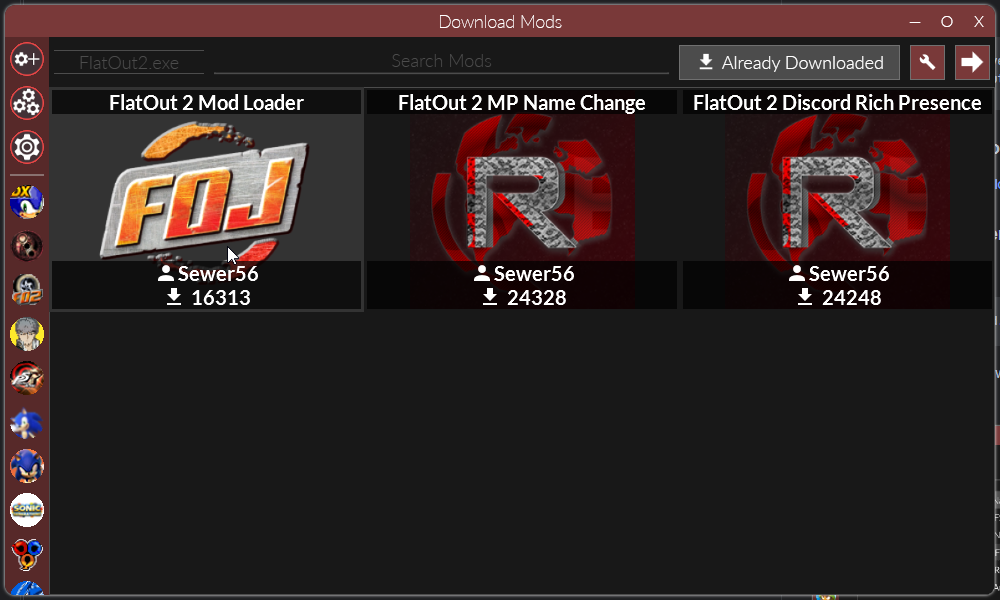
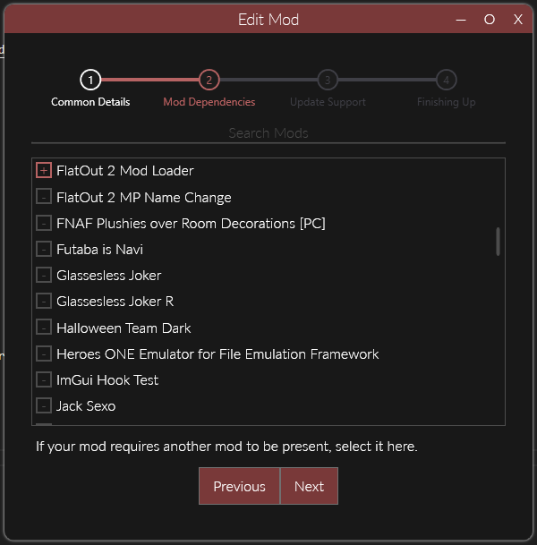
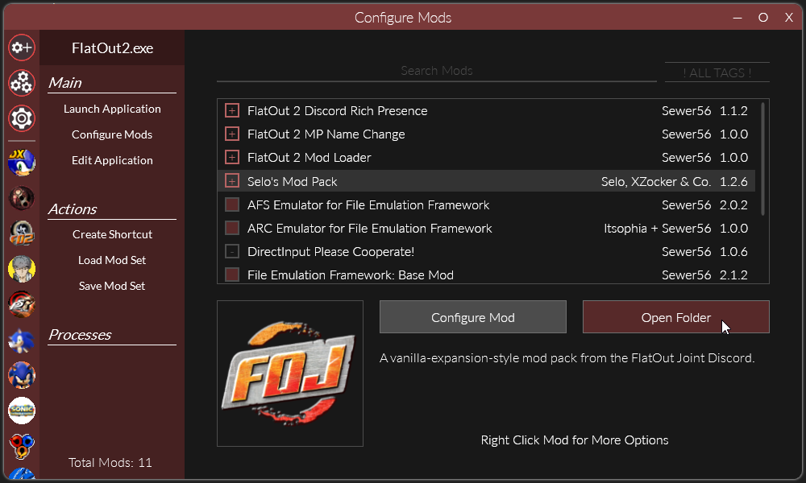
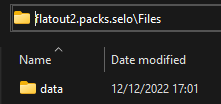
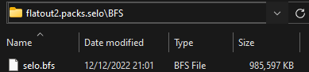

Usage
Creating Your Mod
Info
If you don't already have it installed, install Reloaded-II [installs to desktop].
And replace your FlatOut2.exe with the Polish/GOG/DRM Free version.
Create a Reloaded Mod
Follow the guidance in the Reloaded wiki to create a new Reloaded mod.
Download Mod Loader
If you don't have it already, download the FlatOut 2 Mod Loader Mod from the Download Mods section.

Set Dependency on Mod Loader
In the Edit Mod menu (right click your mod in mods list) we're going to add FlatOut 2 Mod Loader as a dependency.

Adding a 'dependency' to your mod will make it such that Mod Loader will always be loaded when your mod is loaded. This is a necessary step.
Developing Your Mod
Info
For developing mods, ModLoader supports loading of files directly stored in your mod folder(s).
Warning
Please note that files loaded this way have priority over any files loaded from BFS archives, regardless of mod order.
As such, loading loose files is intended for development only.
Open Mod Folder

Go to the folder where your mod is stored, this can be done by simply clicking the Open Folder button.
Adding Your Files
Make a folder called Files, and inside that folder place your stuff.

A mod that replaces the splash/copyright screen at game boot would now look as follows:
// Mod Contents
ModConfig.json
Preview.png
Files
└─data
└─menu
└─copyright.tga
The connectors └─ represent folders.
Releasing your Mods
Pack Your Mod
Info
To release mods, you should pack them into .bfs files, as this will improve load times.
Use my fork of BfsTool, and drag your mod's data over build-fo2-modloader-bfs.bat.
Make a folder called BFS, and inside that folder place your BFS files.

Once you put your BFS files there, remove the original Files folder.
The contents of our mod folder would now look as follows.
// Mod Contents
ModConfig.json
Preview.png
BFS
└─selo.bfs
The connectors └─ represent folders.
Note
When multiple BFS files are found in the folder, they will be loaded in alphabetical order.
i.e. 00_menus.bfs will be loaded before 01_music.bfs because 00 comes before 01.
Publish Your Mod
Info
You should both Enable Update Support AND Publish according to the guidelines.
It is recommended to enable update support even if you don't plan to ship updates as doing so will allow your mod to be used in Mod Packs.
Please refer to the Reloaded wiki.
For bigger (> 100MiB) updates, consider using Delta Updates to keep download sizes for users updating your mod small.
Note
Creating deltas for 1GB+ files might take a few minutes, please be patient.